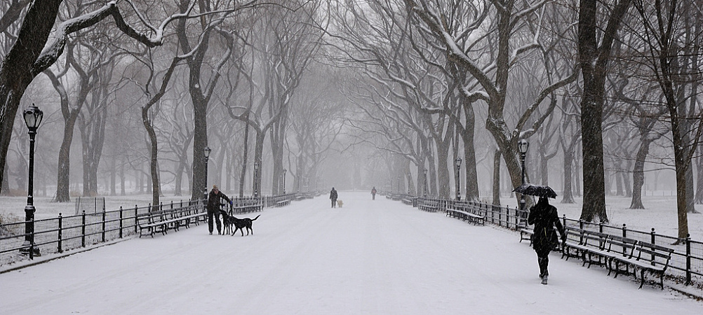
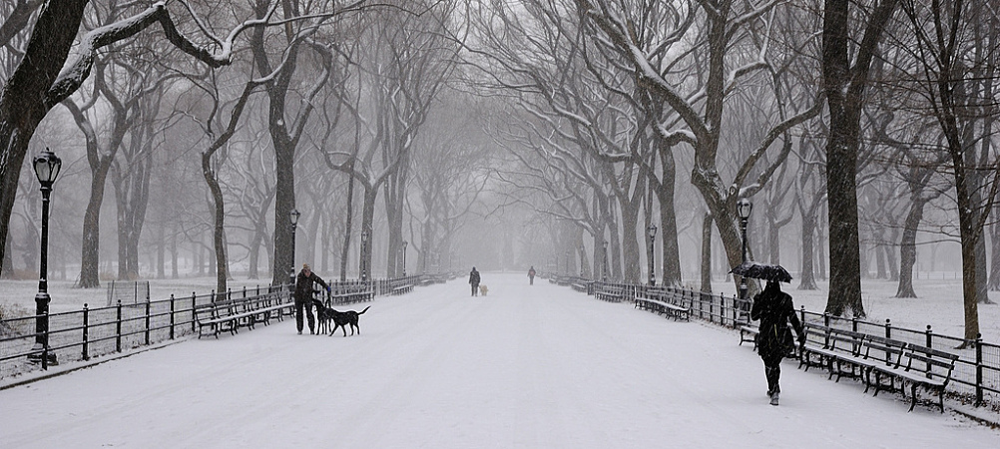

What Happens?
The Winter time brings snow occasionally which stay on the ground for a while. It creates a beautiful landscape, however transportation is not easy during the Winter due to snow/ice on the ground. The Winter has the shortest days as well as the longest nights.


A snow covered park in NYC.
When is Winter?
The Winter time is from December to March in the Northern Hemisphere and from June to September in the Southern Hemisphere.

Fort Greene Park during the Winter.
How's the Weather?
Winter is the coldest season of them all. In NYC, temperatures on average during the Winter range from 15-40 degrees fahrenheit. It is really cold and if you expect to survive outside during the Winter, you need to wear multiple layers of clothing.
A beautiful view of the NYC skyline showing the amount of ice in the river.